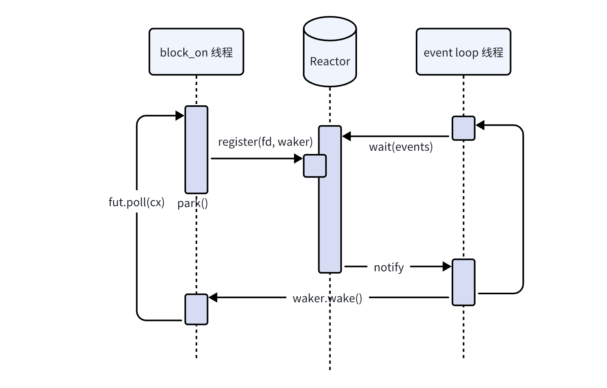

Introduction
目前Rust使用最广的异步运行时是tokio，但tokio是一个十分完整的运行时，对于使用者来说几乎是一个黑盒，除非直接深入其源码，否则无法了解其结构与设计。这又使得tokio又像是一个无缝的蛋，当我们希望定制一些调度规则时，几乎是无从下手。
而smol作为tokio的“竞争对手”，其接口设计则好多了，将异步运行时拆分成相对独立的且小巧的几块（async-io, async-executor, async-task等等），能学习者能更好地了解异步运行时的结构，也能让使用者方便定制一些特定的规则。
那么这篇文章，大概顺着smol给出的设计思路，从头实现一个简单但齐全的异步运行时，让大家对异步运行时有一个基础的理解。
本文代码参考这里
（一直想写这篇文章，但耽搁了好久）
Future
我们还是得从Future讲起，Future是rust中异步编程的最基础的抽象，表示一个异步的计算。
Future的接口
Future的接口采用的是基于轮询的形式，而非更加常见的CPS形式：
为了方便叙述，这里先去掉一些噪音，化简了一下现有接口
#![allow(unused)] fn main() { /// 异步计算的抽象 trait Future { type Output; /// 提供一个轮询的接口 fn poll(&mut self, waker: Waker) -> Poll<Self::Output>; } /// 轮询的结果 enum Poll<T> { Pending, Ready(T) } #[derive(Clone)] struct Waker { /*...*/ } impl Waker { /// 当异步计算有进展时调用，以通知轮询方进行下一轮的轮询 fn wake(self); } }
我们需要拿到一个Future的值，我们需要不断地调用poll轮询它：
-
当
poll返回Pending的时候，表示Future还没完成，且暂时不需要占用当前控制流。从Future的角度来说，则是让出了当前的控制流，让我们可以做一些其它的事情。相比于同步阻塞的IO，异步IO当资源未就绪时返回Pending，可以避免陷入内核态，同时能减少上下文切换的开销
-
当
poll返回Ready的时候，则表示Future的计算已完成。
当然，除了poll以外，还可以取消一个Future，只需要不再轮询它，这时可以选择析构掉Future，释放掉里面的资源（这时对于Future来说，相当于在.await处panic了）。
其中poll还有一个参数Waker，当Future有进展时，就可以调用.wake()，来通知轮询方继续轮询Future。其中Waker，满足Send和 Sync，意味着.wake()方法可以在任何地方调用，比如说把Waker注册给OS，由OS来调用.wake()。
注意：这个Waker参数并不一定是自上而下传递下来的，也有可能是poll中间构造的，甚至可以来自于别的运行时的。
于是对一个Future求值最基础的程序就长这样：
#![allow(unused)] fn main() { // 轮询future loop { match fut.poll(waker) { Pending => { // 当异步计算不需要占用当前线程控制流的时候，会让出控制流，于是可以做一些其它事情 } Ready(r) => { // 计算完成 break r } } // 当`fut`有进一步进展时，可以进一步轮询。 if todo!("fut 有进展") { continue; } } }
不过这里补充一点，poll一个Future的策略完全由轮询方来决定，不同的业务场景可以以不同的方式去轮询。Waker不调用的时候也轮询方也可以去poll一个Future；反过来Waker被调用了，也可以不立刻去poll。比如我们可以“马不停蹄”地轮询Future
#![allow(unused)] fn main() { loop { // 返回`Pending`时，立刻继续`poll`，直到返回`Ready`， // 对于不希望线程休眠的程序的运行时，就可以这么设计 if let Ready(r) = fut.poll(waker) { return r; } } }
作为对比，这里简单地把基于CPS变换的异步计算的抽象列在这里：
#![allow(unused)] fn main() { trait Future { type Output; /// 1.`schedule`和`callback`不应该阻塞，`callback`可能会被注册到一些地方 /// 2. 当异步计算**完成**时，`callback`就会被调用。 fn schedule<Callback>(self, callback: Callback) where Callback: FnOnce(Self::Output) + Send + Sync } }这时候对
Future的求值就和我们在其他语言（比如js）中见到的类似了：#![allow(unused)] fn main() { fut.schedule(|output| { // 异步计算完成 do_something(output); }); }
其它更复杂的异步接口，在rust里也都可以，（也倾向于）设计成poll_xxx的形式（注：后续所有的waker参数都替换成现在的Context）：
- 异步流：
fn poll_next(self: Pin<&mut Self>, cx: &mut Context<'_>) -> Poll<Option<Self::Item>> - 异步读：
fn poll_read(self: Pin<&mut Self>, cx: &mut Context<'_>, buf: &mut [u8]) -> Poll<Result<usize, Error>> - 异步写：
fn poll_write(self: Pin<&mut Self>, cx: &mut Context<'_>, buf: &[u8]) -> Poll<Result<usize, Error>>
等等。
Future的接口其实是脱胎于Iterator的接口，都是通过**“外部”**轮询的方式来获取下一步结果，同样也可以造出很多不同功能的组合子（也可以叫Adapter）。相对于传统回调的方式，这种方式更符合Rust的哲学——零开销抽象，同时在borrow checker下这样的接口也更易使用一些。
这里更深入的讨论就不展开了，大家有兴趣可以看一下这些资料：
Future的例子
刚刚通过接口的形式来介绍Future，那么我们怎么实现一个Future呢？除了async {}这种由编译器生成的Future以外，这里稍微给几个简单的例子。
yield_now()
第一次轮询时返回Pending，第二次轮询时就绪。用于临时交还控制流用：
#![allow(unused)] fn main() { struct YieldNow { is_ready: bool } impl Future for YieldNow { type Output = (); fn poll(self: Pin<&mut Self>, cx: &mut Context<'_>) -> Poll<()> { if self.is_ready { return Poll::Ready(()); } self.is_ready = true; // 通知调用方，自己有“进展” cx.waker().wake_by_ref(); // 交还控制流 Poll::Pending } } pub async fn yield_now() { YieldNow { is_ready: false }.await } }
stdin
这个例子通过多线程模拟异步的IO，这里以stdin为例子（Rust标准库里的Stdin是同步阻塞的）：
#![allow(unused)] fn main() { // 提交到stdin线程处理的任务 struct StdinTask { buf: Mutex<Box<[u8]>>, waker: AtomicWaker, res: Mutex<Option<io::Result<usize>>>, } fn task_sender() -> &'static Sender<Arc<StdinTask>> { static SENDER: OnceCell<Sender<Arc<StdinTask>>> = OnceCell::new(); SENDER.get_or_init_bloking(|| { let (tx, rx) = mpsc::channel(); // 单起一个线程来处理stdin的读任务 thread::spawn(move || { for mut task in rx { // 同步阻塞地读stdin let res = stdin().read(&mut task.buf.lock()); // 将读的结果塞回去 *task.res.lock() = Some(res); // 通知已完成 task.waker.take().map(Waker::wake); } }).unwrap(); tx }) } impl StdinTask { fn poll_read(&self, cx: &mut Contex<'_>) -> Poll<()> { // 检查任务是否完成 if let Some(res) = self.res.lock() { return Poll::Ready(()) } // 重新注册一遍waker，因为有可能不是同一个运行时poll了。 self.waker.register(cx.waker().clone()); Poll::Pending } } // 对外提供的接口 pub async fn read_stdin(buf: Box<[u8]>) -> io::Result<(usize, Box<u8>)> { let task = Arc::new(StdinTask { buf: Mutex::new(buf), waker: AtomicWaker::new(), res: Mutex::new(None), }); // 发送到stdin线程处理 task_sender().send(task.clone()).unwrap(); // 等待task被处理完 poll_fn(|cx| task.poll_read(cx)).await; // 返回读的结果 let task = Arc::try_unwrap(task).unwrap(); res.map(|i| (i, task.buf.into_inner())) } }
但这种用线程来模拟异步io的方式开销会比较大，我们需要通过系统提供的异步io来进行改进。
join组合子
我们有了前面“单功能”的Future之后，我们还可以通过写一些组合子去把他们组合起来。比如join组合子用于并发执行多个Future，直到所有的Future都完成。
#![allow(unused)] fn main() { #[pin_project] struct Join<FA, FB> where FA: Future, FB: Future, { #[pin] fut_a: Option<FA>, a: Option<<FA as Future>::Output>, #[pin] fut_b: Option<FB>, b: Option<<FB as Future>::Output>, } impl<FA, FB> Join<FA, FB> where FA: Future, FB: Future, { type Output = (FA::Output, FB::Output); fn poll(self: Pin<&mut Self>, cx: &mut Context<'_>) -> Poll<Self::Output> { let this = self.project(); loop { // 当a fut未完成时poll if let Some(fut_a) = this.fut_a.as_pin_mut() { if let Poll::Ready(a) = fut_a.poll(cx) { this.a = Some(a); this.fut_a.set(None); continue; } } // 当b fut未完成时poll if let Some(fut_b) = this.fut_b.as_pin_mut() { if let Poll::Ready(b) = fut_b.poll(cx) { this.b = Some(b); this.fut_b.set(None); } } // 当两个future都成功时返回Ready // 否则返回Pending if let (Some(a), Some(b)) = (this.a, this.b) { return Poll::Ready((this.a.take().unwrap(), this.b.take().unwrap())); } else { return Poll::Pending; } } } } }
block_on
前面花了比较大的笔墨在介绍Future上。现在终于可以去聊聊异步运行时的事了。
异步运行时的最低要求是可以求值一个Future，这个接口的签名写起来就是：
#![allow(unused)] fn main() { /// 阻塞地求值一个`Future`，并把future的结果返回出来 fn block_on<T>(fut: impl Future<Output = T>) -> T; }
因为rust本身的运行时只能直接调用同步的接口，所以提供一个同步的
block_on接口是必要的，作为“异步转同步”的入口。
按照上面Future求值的模板，如果除了求值Future之外什么都不干的话，我们就可以在poll一个Future返回Pending时，休眠线程：
#![allow(unused)] fn main() { fn block_on<T>(fut: impl Future<Output = T>) -> T { // 当前线程的`parker`和`unparker` let (parker, unparker) = parking::pair(); // waker在调用`.wake()`时unpark当前线程 let waker = waker_fn(move || { unparker.unpark(); }); let cx = &mut Context::from_waker(&waker); // 轮询`Future` let mut fut = pin!(fut); loop { if let Poll::Ready(t) = fut.as_mut().poll(cx) { return t; } // 返回`Pending`就休眠线程，等待`waker`被调用 // 注：如果waker已经被调用过了，这里就不会阻塞。 parker.park() } } }
这就是block_on最基础的实现（当然如果在嵌入式里没有park/unpark，也只有单线程的情况下就另当别论），也是一个异步运行时最简单的形式。之后我们在这个基础上不断添加新的东西来完善它。
有了block_on我们就可以写一个简单的异步程序了：
fn main() { // 读一次stdin，并打印 let fut_a = async { let mut buf = Box::<[u8]>::from([0;100]); let mut i = 0; (i, buf) = read_stdin(buf).await?; println!("{:?}", String::from_utf8_lossy(&buf[..i])); Ok(()) }; let fut_b = async { yield_now().await; println!("yield 1"); yield_now().await; println!("yield 2"); }; // 并发执行fut_a, fut_b let fut = join(fut_a, fut_b); // 执行fut block_on(fut); }
Reactor
因为rust标准库自带的IO默认都是同步且阻塞的（除了socket可以设置为non blocking模式），这就意味着我们需要有额外的线程来处理IO，才能让IO Future不阻塞在当前线程，就像刚刚异步的我们自己封装的stdin一样，而且单个线程也只能处理一个fd的IO操作。当我们有很多不同类型的IO要处理的时候，要么效率很低（单线程逐个处理），要么开销很高（开很多个线程处理IO）
异步IO与Poller
既然标准库没有异步的IO接口，我们把目标转向OS自身提供的异步IO接口，比如linux下的epoll。epoll主要提供了三个接口：
/// 创建新的epoll实例
int epoll_create(int size);
/// 向 epoll 实例中添加、修改或删除文件描述符
int epoll_ctl(int epfd, int op, int fd, struct epoll_event * event);
/// 等待 epoll 实例中的文件描述符准备就绪。
/// 这个函数会阻塞调用线程，到存在文件描述符就绪。
int epoll_wait(int epfd, struct epoll_event * events, int maxevents, int timeout);
核心思路是：
- 把“关心”的IO的fd添加到
epoll实例中（比如关心fd是否能写） - 然后调用
epoll_wait，阻塞调用线程到存在关心的fd已就绪时，线程继续运行。 - 这时候就能直接给已就绪的fd进行IO操作。
相对于标准库同步阻塞的IO操作来说，epoll把 等待fd就绪 这一步单独抽离了出来（也就是上面的第二步），允许同时监听多个fd，且允许超时。这就允许用额外一个线程就可以处理多个IO事件，或者是通过时间片的方式来处理IO事件。
不过要注意的是，epoll并不支持普通的文件，如果把文件fd添加到epoll里会返回EPERM错误。普通的文件读写需要用到aio或者使用一个线程池把同步转成异步。
epoll目前支持的fd是：
- 网络socket，比如说TCP, UDP等
timerfdsignalfdinotify- pipe
- 子进程
- 终端相关，比如
stdin,stdout,stderr epoll本身（可以加到其它epoll实例中）- 等等
不同的操作系统都有类似的接口，rust里已经有crate进行统一封装，比如说mio, polling。比如说polling提供提了以下接口，大体结构与epoll一致：
#![allow(unused)] fn main() { /// Poller实例， /// * linux下是epoll实例 /// * mac, iOS下是kqueue实例 /// * windows下是iocp实例 struct Poller { /*...*/ } impl Poller { /// 创建一个poller实例 pub fn new() -> Result<Poller>; /// 往poller实例中添加fd，及关心的事件 pub unsafe fn add( &self, /// unix下是fd, windows下是socket source: impl AsRawSource, interest: Event ) -> Result<()>; /// 更新fd关心的事件， /// 比如关心fd是否可读，改成是否可写 pub fn modify(&self, source: impl AsSource, interest: Event) -> Result<()>; /// 删除关心的fd pub fn delete(&self, source: impl AsSource) -> Result<()>; /// 阻塞调用线程直到 /// * 存在关心的fd就绪，或 /// * 超时 /// * 唤醒poller实例 pub fn wait( &self, events: &mut Events, /// * `None`为不设置超时 /// * `Some(0)`为不阻塞 timeout: Option<Duration> ) -> Result<usize>; /// 唤醒poller实例 pub fn notify(&self) -> Result<()>; } }
这是polling库的Example（截自README）
#![allow(unused)] fn main() { use polling::{Event, Poller}; use std::net::TcpListener; // Create a TCP listener. let socket = TcpListener::bind("127.0.0.1:8000")?; socket.set_nonblocking(true)?; let key = 7; // Arbitrary key identifying the socket. // Create a poller and register interest in readability on the socket. let poller = Poller::new()?; poller.add(&socket, Event::readable(key))?; // The event loop. let mut events = Vec::new(); loop { // Wait for at least one I/O event. events.clear(); poller.wait(&mut events, None)?; for ev in &events { if ev.key == key { // Perform a non-blocking accept operation. socket.accept()?; // Set interest in the next readability event. poller.modify(&socket, Event::readable(key))?; } } } }
Reactor的设计
参考
我们借助polling库，来实现一个reactor，提供统一管理IO的注册、IO事件监听以及唤醒的功能。
基础的设计是：
- 有一个event loop不断监听注册在Reactor中的IO事件，当IO事件有响应时，调用对应的Waker
- 被
block_on求值的IO future，向Reactor注册IO事件（包括waker）

这里Reactor最简单提供两个接口，event_loop和register_readable：
#![allow(unused)] fn main() { // Reactor实例 pub struct Reactor { // Poller实例 poller: Poller, // 存储 repo: Mutex<Slab<Arc<IOEvent>>>, } // 代表一个IO struct IOEvent { fd: RawFd, key: usize, is_ready: AtomicBool, waker: AtomicWaker, } impl Reactor { // IO事件循环 // 当存在fd就绪时，调用注册的waker pub fn event_loop(&self) -> io::Result<()>; // 注册一个可读事件 // 当fd可读时返回 pub async fn register_readable(&self, fd: BorrowedFd<'_>) -> io::Result<()>; } }
先来看看event_loop的实现，其做的事情就是：
- 等待注册的IO就绪，
- 调用对应的waker
#![allow(unused)] fn main() { pub fn event_loop(&self) -> io::Result<()> { let mut events = Events::new(); loop { events.clear(); // 等待注册到poller的IO就绪 match self.poller.wait(&mut events, None) { Ok(0) => {}, Ok(_) => { let repo = self.repo.lock(); for ev in events.iter() { // 调用waker if let Some(event) = repo.get(ev.key) { event.waker.take().map(Waker::wake); event.is_ready.swap(true, Ordering::Release); } } Ok(()) } Err(err) if err.kind() == ErrorKind::Interrupted => {}, Err(err) => return Err(err), } } Ok(()) } }
然后这里的注册的代码，写为一个异步函数，也方便通过RAII的方式去反注册：
#![allow(unused)] fn main() { // 注册可读fd，直到fd就绪 pub async fn register_readable(&self, fd: BorrowedFd<'_>) -> io::Result<()> { // IO RAII struct IOGuard<'r> { reactor: &'r Reactor, event: Arc<IOEvent>, } impl<'r> IOGuard<'r> { // 构造FdGuard，并将fd注册到reactor中 fn new(reactor: &'r Reactor, fd: BorrowedFd<'_>) -> io::Result<Self> { let event = { let mut repo = reactor.repo.lock(); let entry = repo.vacant_entry(); let event = Arc::new(IOEvent { fd: fd.as_raw_fd(), key: entry.key(), is_ready: AtomicBool::new(false), waker: AtomicWaker::new(), }); entry.insert(event.clone()); event }; // fd注册到poller里 if let Err(err) = unsafe { reactor.poller.add(event.fd, Event::readable(event.key)) } { let mut repo = reactor.repo.lock(); repo.remove(event.key); return Err(err); } Ok(Self { reactor, event }) } } // 当完成或者取消时自动反注册 impl Drop for IOGuard<'_> { fn drop(&mut self) { let mut repo = self.reactor.repo.lock(); repo.remove(self.event.key); self.reactor .poller .delete(unsafe { BorrowedFd::borrow_raw(self.event.fd) }) .ok(); } } let io_guard = IOGuard::new(self, fd)?; poll_fn(|cx| { let event = &*io_guard.event; // 等待reactor唤醒并改变状态 if event.is_ready.load(Ordering::Acquire) { return Poll::Ready(Ok(())); } // 每次poll别忘记更新waker event.waker.register(cx.waker()); Poll::Pending }) .await } }
这个register_readable是用于IO future的实现的，这里仍然以stdin为例子：
#![allow(unused)] fn main() { // 异步的stdin pub struct Stdin<'r> { reactor: &'r Reactor, stdin: io::Stdin, } impl<'r> Stdin<'r> { pub fn new(reactor: &'r Reactor) -> io::Result<Self> { let this = Self { reactor, stdin: io::stdin(), }; // 设置为异步的IO， // 之后阻塞时通过Read::read返回的错误码为WouldBlock rustix::io::ioctl_fionbio(&this.stdin, true)?; Ok(this) } pub async fn read(&self, buf: &mut [u8]) -> io::Result<usize> { loop { // 尝试读stdin match self.stdin.lock().read(buf) { Err(err) if err.kind() == io::ErrorKind::WouldBlock => {} res => return res, } // 如果被阻塞则等待stdin就绪 self.reactor.register_readable(self.stdin.as_fd()).await?; } } } }
有了Reactor，我们就可以单独跑一个线程来管理多个IO的注册与唤醒了，到这里才能体现出异步在IO密集的应用上的优势。虽然和前面的stdin实现都创建了一个额外的线程处理IO事件，但这里可以同时处理多个不同类型的IO，实现了所谓的IO的“复用”。
#![allow(unused)] fn main() { let reactor = Reactor::new(); thread::scoped(|s| { // reactor io线程，用于处理IO事件 s.spawn(|| reactor.event_loop().unwrap()); // 其它线程拿到Reactor可以用于创建IO对象 s.spawn(|| { block_on(async { let mut buf = [0; 1000]; let mut buf = &mut buf[..]; let stdin = Stdin::new(reactor)?; while buf.len() > 0 { let x = stdin.read(buf).await?; println!("from stdin: {:?}", String::from_utf8_lossy(&buf[..x])); buf = &mut buf[x..]; yield_now().await; println!("yielding"); } println!("end"); Ok(()) }) }); }); }
注：其实reactor的事件循环可以和block_on的轮询集成到一个循环里，这样甚至不需要多开一个线程。通过向reactor里注册一个特定的fd，在waker里进行IO操作，可以唤醒reactor。
Executor
不过到目前为止，我们求值Future还是只有block_on函数，只能在单个线程上搞并发（通过join这些组合子），虽然在不少平台上这已经足够了（比如wasm目前多线程还没搞好，只有单线程），但在很多平台上却无法利用多线程的优势。
于是我们希望可以实现一个朴素的策略，利用多线程来poll Future：
- 把
Future丢到队列里， - 线程池里的空闲的线程则在队列中取
Future轮询一次，然后晾一边， - 等待
Future的waker被调用，丢到队列里。
（图懒得画，大家自己脑补）
Task
我们把“等待Future的waker被调用，然后又丢到队列里”，这个部分单独抽出来，这个步骤称之为一次调度，被调度的称为一个Task。
async_task已经为我们封装好了这个抽象，它提供的核心接口为：
spawn创建一个taskRunnable::runpoll 一下 task中的futureschedule当task中的future被唤醒时，把task传到调度器里
#![allow(unused)] fn main() { // 接受一个`Future`和`schedule`创建一个`Task` pub fn spawn<F, S>(future: F, schedule: S) -> (Runnable, Task<F::Output>) where // 因为Future可以丢到任何线程中执行，所以要求Send F: Future + Send + 'static, F::Output: Send + 'static, // 因为schedule可以被任何地方随时调用，所以要求Send + Sync S: Fn(Runnable) + Send + Sync + 'static; impl Runnable { // 执行一遍Future::poll() // 当wake被调用时，将task传到schedule里 pub fn run(self) -> bool; // 直接把task传给schedule pub fn schedule(self); } // 当Future完成后，才会唤醒一次poll task的运行时 impl<T> Future for Task<T> { /*...*/ } }
比如当schedule的作用是将task丢到队列里，就可以写成：
#![allow(unused)] fn main() { let (tx, rx) = channel(); // 把task丢到队列里 let schedule = move |runnable| tx.send(runnable).unwrap(); // 创建一个task let (runnable, task) = async_task::spawn(yield_now(), schedule); // 执行一遍poll， // 当waker被调用时，就会把task传给schedule runnable.run(); // 这里task没法完成，因为传到队列里后没有人执行 }
这里插入一些个人的想法：
rust在客户端最常见的使用方式之一就是作为跨端的业务层使用，被上层业务代码所调用。比如UIKit(iOS), Android等。 这些 宿主 通常都会自带一个异步的运行时。 利用
async_task我们甚至可以利用“宿主语言”的异步运行时进行调度。
至于async_task是如何实现的，这里就不做太多展开了，大家可以直接去看源码。这里做点提示，这里Task, Runnable以及Waker背后都指向创建时的Future+schedule，因为职责不一样所以提供的方法不一样：
Task用于看future是否完成，以及取最终结果Runnable用于执行Future::pollWaker用于把Task传给schedule
一个完整的Executor的例子
这里的Executor提供两个核心的接口：
#![allow(unused)] fn main() { pub struct Executor<'a> { /// 这里用的是异步mpmc channel tx: Sender<Runnable>, rx: Receiver<Runnerble>, /// Makes the `'a` lifetime invariant. _marker: PhantomData<std::cell::UnsafeCell<&'a ()>>, } impl<'a> Executor<'a> { // 创建一个Task，并丢到Executor中 pub fn spawn<T: Send + 'a>(&self, future: impl Future<Output = T> + Send + 'a) -> Task<T>; // 当executor里有新的task时，就会拿出来执行 pub async fn execute(&self); } }
有了async_task我们就很容易实现这两个接口：
#![allow(unused)] fn main() { pub fn spawn<T: Send + 'a>(&self, future: impl Future<Output = T> + Send + 'a) -> Task<T> { let tx = self.tx.clone(); let schedule = move |runnable| tx.send(runnable).unwrap(); // 创建一个task，并直接丢到队列里 let (runnable, task) = unsafe { async_task::spawn_unchecked(future, schedule) }; runnable.schedule(); task } pub async fn execute(&self) { // 不断从队列里取task，并轮询 let mut rx = self.rx.stream(); while let Some(runnable) = rx.next().await { runnable.run(); } } }
注：同
Reactor::event_loop，Executor::execute也可以集成到block_on中。
有了Executor我们就可以利用多个线程来并发执行异步代码了：
#![allow(unused)] fn main() { let reactor = Reactor::new(); let executor = Executor::new(); thread::scope(|s| { // reactor io线程，用于处理IO事件 s.spawn(|| reactor.event_loop().unwrap()); // 起8个线程作为线程池，来并发执行task for _ in 0..8 { s.spawn(|| { block_on(executor.execute()); }); } // 创建异步任务，丢到Executor中执行 executor.spawn(async { let mut buf = [0; 1000]; let mut buf = &mut buf[..]; let stdin = Stdin::new(reactor).unwrap(); while buf.len() > 0 { let x = stdin.read(buf).await.unwrap(); println!("from stdin: {:?}", String::from_utf8_lossy(&buf[..x])); buf = &mut buf[x..]; } }).detach(); // 这个也会丢到Executor，然后被并发执行 executor.spawn(async { yield_now().await; println!("yield 1"); yield_now().await; println!("yield 2"); }).detach(); }); }
结论
至此，我们已经获得了一个功能相对完整的异步运行时了。这里将异步运行时打碎成block_on, Reactor, Executor三个最基础的组件，其实我们已经拥有了几乎没有上限的定制运行时的能力，我们完全可以控制Future的执行时机，可以拥有什么权限等等。
可惜，现在tokio当道，tokio则几乎没有定制的能力，作为使用者没法拒绝得了tokio全家桶，哎。
最后画一个图来总结下

- 异步运行时最基础的一个功能是
block_on()，对一个Future进行求值，其最简单实现就是对Future进行轮询poll。 - 我们通过引入一个
Reactor（一个IO的event loop），获得了异步IO的能力，比如文件读写、Timer等。 - 然后我们再加入一个
Executor时（利用多线程对Task进行调度），我们就获得了多线程并发的能力，也就是spawn()接口。 - 同时有了
block_on(),Executor和Reactor之后，我们就能获得一个功能相对完整的异步运行时。（当然，不一定要有Executor和Reactor这两个抽象，tokio就是将两者合二为一）